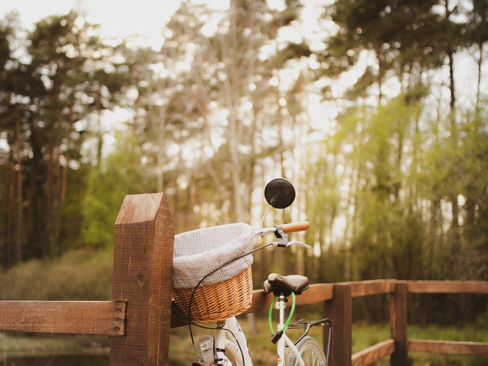

A motorcycle, often called a motorbike, bike, or cycle, is a two- or three-wheeled motor vehicle.[1][2][3] Motorcycle design varies greatly to suit a range of different purposes: long-distance travel, commuting, cruising, sport including racing, and off-road riding. Motorcycling is riding a motorcycle and related social activity such as joining a motorcycle club and attending motorcycle rallies.
 MotorBike Source